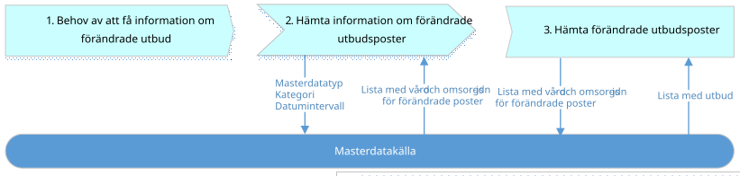
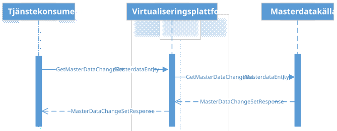

infrastructure: directory: synchronization
1.0.0-rc3 - draft
infrastructure: directory: synchronization - Local Development build (v1.0.0-rc3) built by the FHIR (HL7® FHIR® Standard) Build Tools. See the Directory of published versions
Källa: Tjänstekontraktsbeskrivning för katalogtjänstsynkronisering, version 1.0_RC3 (2018-09-21), TKB_infrastructure_directory_synchronization.docx.
Detta kapitel beskriver de flöden som är relevanta för tjänstedomänen. Beskrivningarna är i form av modeller, för varje flöde finns dels ett arbetsflöde som beskriver vilka steg som ingår i flödet och dels ett sekvensdiagram som tar hänsyn till vilka tjänstekontrakt som nyttjas i de olika stegen.
Detta flöde beskriver behovet hos ett konsumerande system att hämta information om förändrade poster i en masterdatakälla. Med hjälp av informationen om förändrade poster är det sedan möjligt för konsumerande system att hämta enskilda poster för att aktualisera en lokal kopia av hela eller delar av masterdatakällan. Hämtningen av masterdata görs med andra tjänstekontrakt i andra domäner och exemplifieras nedan med hämtning av utbud.

Figuren ligger i TKB:n som inbäddat Visio-objekt; bilden är dess förhandsbild.
| Namn/beteckning | Beskrivning alt. Referens |
|---|---|
| 1. Behov av att få information om förändrade utbud | Ett system som har lokala kopior av masterdata, här exemplifierat med utbud, behöver synkronisera sina poster för att spegla förändringar som skett i masterdatakällan där poster kan skapas, uppdateras och tas bort. |
| 2. Hämta information om förändrade utbudsposter | Systemet med lokala kopior av katalogdata gör en förfrågan till källsystemet med orginalposter, för att få en lista med idn över vilka poster som förändrats. |
| 3. Hämta förändrade utbudsposter | Utifrån svaret i steg 2 kan anropande system välja att hämta de uppdaterade utbudsposterna genom att anropa utbudskontrakt i annan domän och ange relevanta idn i förfrågan. |
| Namn/beteckning | Beskrivning alt. Referens |
|---|---|
| Tjänstekonsument - system med lokal kopia av masterdata | Ett system som har lokala kopior av masterdata och som synkroniserar mot masterdatakällan med schemalagd anropsfrekvens. |
| Masterdatakälla | System som erbjuder standardiserad tillgång till ändringshistorik genom tjänstekontrakt i denna domän. |

Figuren ligger i TKB:n som inbäddat Visio-objekt; bilden är dess förhandsbild.
| Tjänstekontrakt | Hämta information om förändrat masterdata |
|---|---|
| GetMasterDataChangeSet | x |
Domänen äger inte sin egen adresseringsmodell, utan har samma adresseringsmodell som masterdatakällans primära tjänstekontrakt.
| Åtkomst till utbud av vårdtjänster | Logisk adress |
|---|---|
| GetMasterDataChangeSet | Se avsnitt 3.2. |
Ej tillämpbart för denna tjänstedomän.